3.2. Adding Shape Rolling operation
3.6. Defining roll pass settings in Pass table
3.13. Defining Object Positioning
3.14. Defining Contact Relations
3.15. Simulation Controls page
On a Windows machine, go to the  button select DEFORM-v1x.xxx (.xxx indicates version number E.g. v14.0.2)
and select DEFORM GUI Main vxx.xx from the menu. The DEFORM GUI Main window will appear.
button select DEFORM-v1x.xxx (.xxx indicates version number E.g. v14.0.2)
and select DEFORM GUI Main vxx.xx from the menu. The DEFORM GUI Main window will appear.
Create a new problem either by selecting File  New Problem or by clicking the New Problem icon.
The Problem Setup window will appear as shown in Fig. L3.1. Select " Integrated Manufacturing Process"
radio button and Unit system as "SI" using radio button. Define Problem Name as "SHR_LAG_LAB3" and make sure the “Show option dialog” check box is turned on (if we do not turn
on the “Show option dialog” check box, then we will not get the New Project dialog in MO UI). Then click on
New Problem or by clicking the New Problem icon.
The Problem Setup window will appear as shown in Fig. L3.1. Select " Integrated Manufacturing Process"
radio button and Unit system as "SI" using radio button. Define Problem Name as "SHR_LAG_LAB3" and make sure the “Show option dialog” check box is turned on (if we do not turn
on the “Show option dialog” check box, then we will not get the New Project dialog in MO UI). Then click on  button to open a new Problem using the Deform Integrated
Manufacturing Process.
button to open a new Problem using the Deform Integrated
Manufacturing Process.
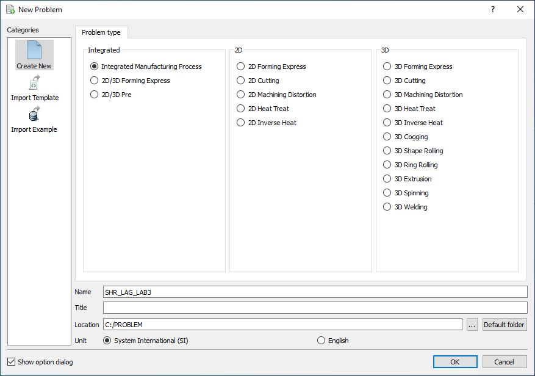
Problem type selection window
Multiple operation wizard will open with the New Project dialog as shown in Fig. L3.2., at this point user will be
prompted to specify a project name (system will create a separate folder with this project name) and title for this session. In this session we will use ‘SHR_LAG_LAB3’ as the project name. 3D Shape Rolling operation can also be added
in "New Project" dialog (see Fig. L3.2.), in this lab we will add Shape rolling operation from Explorer operation
list, so do not check "First operation" check box and "Shape Rolling" operation in "New Project" dialog. Click on  to continue to open the operation.
to continue to open the operation.
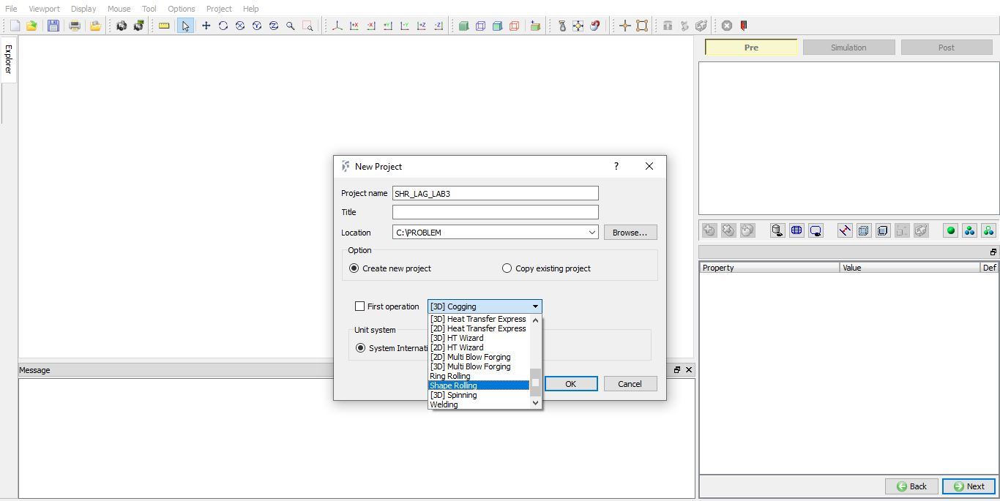
MO Wizard opening window in MO UI
Add one Shape Rolling operation from the Explorer Operations list. Operation can be added by clicking on Shape Rolling operation  button or user can also add by drag and drop into
the Operation Editor.
button or user can also add by drag and drop into
the Operation Editor.
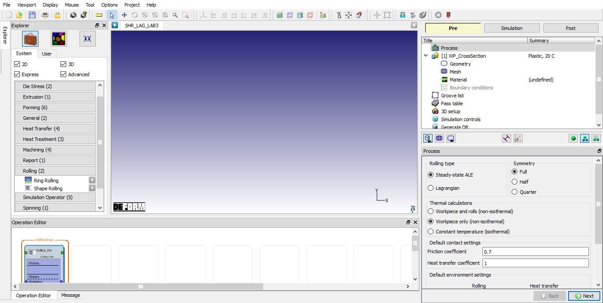
Adding Shape Rolling Operation
Select the rolling type as "Lagrangian" and symmetry type as Full as we will be setting up complete object. As we are interested in temperature gradient in rolls also, select the "Workpiece and rolls (non-isothermal)" option. Define the friction coefficient value as 0.7 and heat transfer coefficient value as 11 as shown in Fig. L3.4.
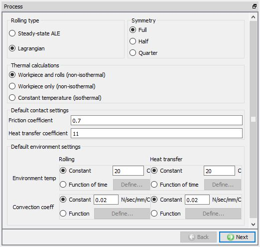
Process page
In WP_CrossSection window keep the object type as ‘Plastic’ and specify workpiece temperature as 100°C (see Fig. L3.5.).
Other option available at this stage are ‘Import Object’ from another keyword file or database. Click on  to continue.
to continue.
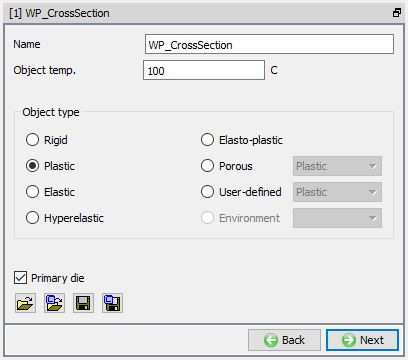
Workpiece Object Definition
To create a rectangular bar geometry for workpiece, in Geometry page select Define Primitive. From primitive geometry window select bar and define the parameters as mentioned below. A rectangular bar is created as shown in Fig. L3.6.
Origin Point = (-50, -42.5)
Width W = 100mm
Height H = 85mm
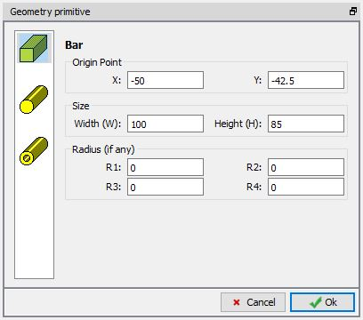
Workpiece geometry definition in Geometry primitive window
Generate the workpiece mesh with default number of elements and settings.
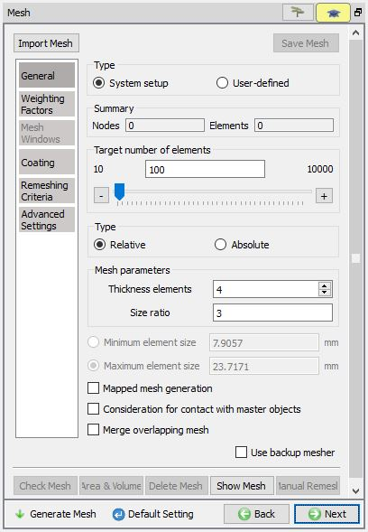
Generating Workpiece mesh
To assign material for workpiece, select the material ‘AISI-1045’ from material window. This can be done as shown in Fig. L3.8. Click on  until Groove list page.
until Groove list page.
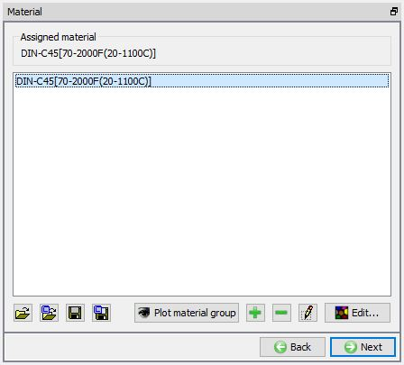
Assigning material for Workpiece
In Groove List page, we can add grooves by clicking on the ‘ ’ button. Click ‘
’ button. Click ‘ ’ once to add one groove, we will be using same
grove for top and bottom roll.
’ once to add one groove, we will be using same
grove for top and bottom roll.
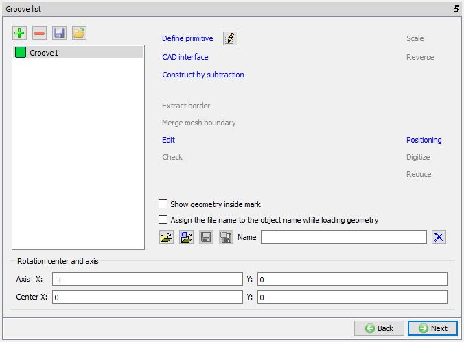
Groove list page
Select the First groove and click on  . Roll Groove Primitive page will be opened, select Flat rolls. For roll geometry, Define width as 120,
radius (r1) as 5 and Roll Radius RR as 100 as shown in Fig. L3.10.
. Roll Groove Primitive page will be opened, select Flat rolls. For roll geometry, Define width as 120,
radius (r1) as 5 and Roll Radius RR as 100 as shown in Fig. L3.10.
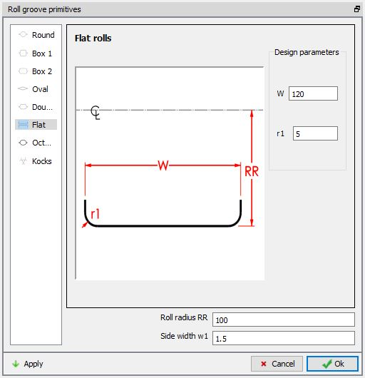
Defining Groove Geometry
By default, we can observe Pass1 and First HT being added to the Pass table. First HT settings need to be defined if we are simulating the air cooling of the Workpiece before the first Pass. In this lab, we will simulate only rolling pass, hence we will define settings for Pass1.
Turn on the 'Show all rolls (for asymmetric rolling)' check box.
Under Pass1, select Groove 1 from the groove list for both Top roll and Bottom roll.
Define the Roll speed (rpm) as 50, Roll gap (mm) as 80 and Roll temperature (C) as 40. Leave other settings as default and click  to 3D setup page.
to 3D setup page.
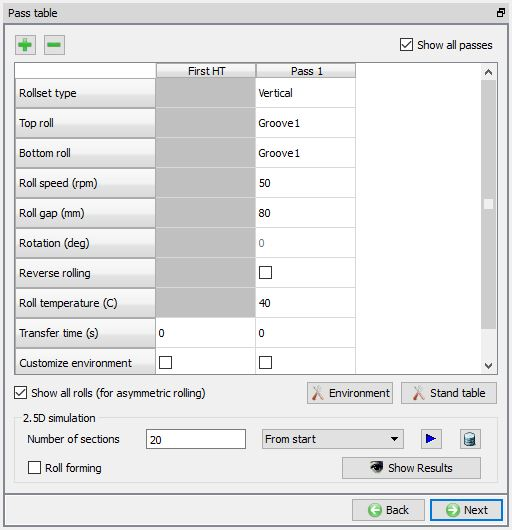
Pass Table
From DEFORM v12, in 3D Setup page we have Pusher object options for Lagrangian rolling operation in Stand table page. Now we can create Pusher object using Object option or we can just assign Pusher BCC without creating pusher object as shown in Fig. L3.12.
Object: When we select Object option, default pusher object geometry will be created similar to workpiece cross section and Pusher object will be added in objects list.
BCC: When we select BCC option, for workpiece Pusher BCC will be added in BCC Page and movement page will be added for workpiece to define movement value same as that of Pusher. No pusher object will be added in objects list.
None: When we select None option, Pusher object / Pusher BCC will not be added to the operation.
Auto position: using this option, Workpiece will be interference positioned with Top roll in Movement direction and Pusher will be interference positioned with Workpiece in Movement direction.
In this lab select Object option for Pusher.
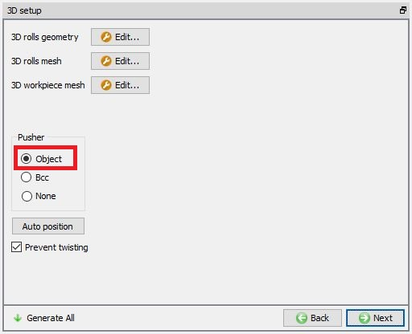
3D Setup page
Click on button of 3D rolls geometry to modify the settings of 3D roll object geometry generation, 3D roll geometry settings page will be opened. In 3D rolls Geometry settings
page, define the number of layers as 72 and select the 'Uniform geometry generation'. Then click on  . Click on
. Click on  button
to close the 3D rolls Geometry settings window.
button
to close the 3D rolls Geometry settings window.
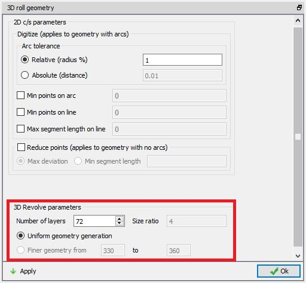
3D Roll Geometry settings page
Click on button of 3D rolls mesh to modify the mesh settings of the roll, 3D roll mesh window will be opened with settings for 3D roll mesh. Define number of revolved sections for rolls as 72 using the “Uniform mesh generation” option and import the die material ‘AISI-H-13’ from material library to assign to rolls as shown in Fig. L3.14. Click on  button to generate mesh for rolls with defined settings and the material. Click on
button to generate mesh for rolls with defined settings and the material. Click on  button to close the 3D roll
mesh window.
button to close the 3D roll
mesh window.
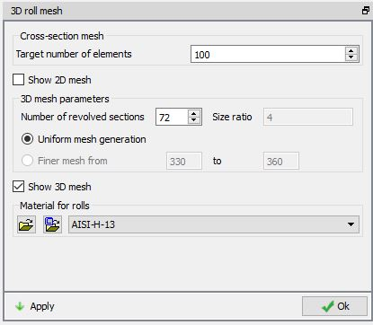
3D Roll mesh settings page
In this lab, we will use Tetrahedral mesh for the Workpiece. Click on button of 3D Workpiece mesh, Mesh window with 3D Workpiece mesh settings will be opened. Select user radio
button for Workpiece Length and define the length as 600 mm, select Tetrahedral mesh radio button, define Target number of elements as 20000 and Size ratio as 1,
as shown in the Fig. L3.15. Click on  to generate
3D Workpiece mesh. Click
to generate
3D Workpiece mesh. Click  to close the Mesh window of the Workpiece mesh settings after generating the mesh.
to close the Mesh window of the Workpiece mesh settings after generating the mesh.
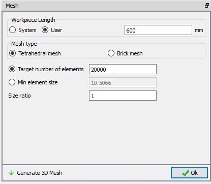
3D Workpiece mesh settings page
Click on button in 3D setup page and click on “Auto position” button to position the Pusher, Rolls and workpiece correctly as shown
in below Fig. L3.16. Click on  to continue.
to continue.
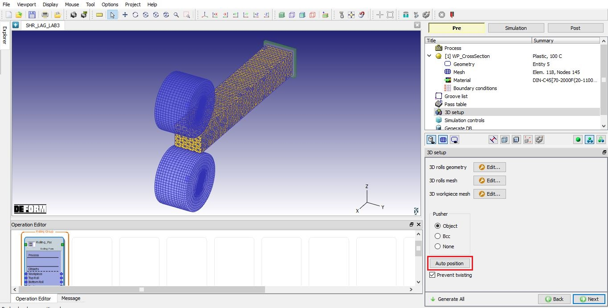
Positioning the 3D objects
Accept the default settings in simulation controls page.
Here save the project and select the Rolling Pass operation in operation editor.
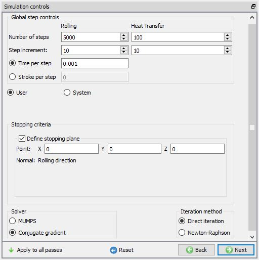
Simulation controls page
Select the Rolling Pass operation in the operation editor.
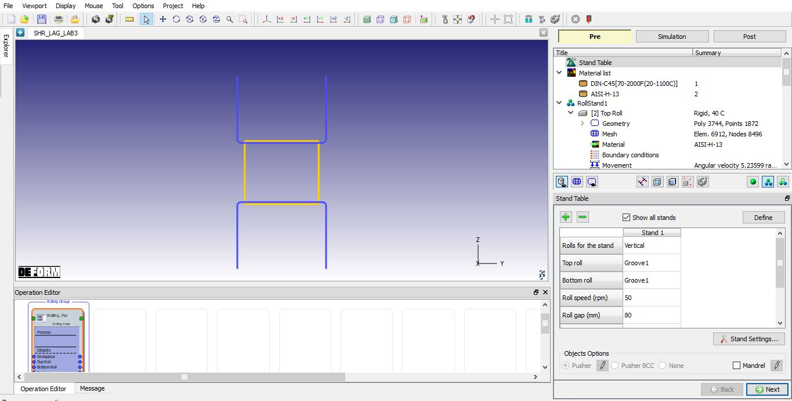
Rolling pass operation
As you select the Rolling Pass operation, the Stand table page will appear as shown in figure Fig. L3.18. We will use tables at front and back
of the roll stand in this lab, so turn on the Table back and Table front check boxes as shown in the Fig. L3.19. As mesh is generated and material is assigned for rolls, click  until Table (Back) page.
until Table (Back) page.
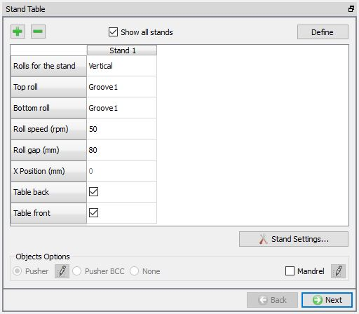
Stand Table page
We need to define tables at front and back of the roll stand. The table at the back is named Table(Back) and the table at front is named Table(Front). In Table(Back) page, accept the default temperature
and click on  .
.
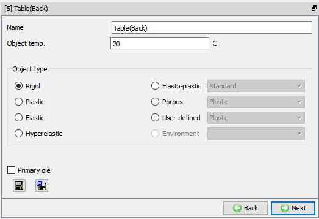
Table (Back) page
In Table(Back) geometry page, select the 'Define primitive' and define the parameters as mentioned below for back Table geometry.
Origin Point X= -50mm
Width W = 100mm
Height H = 5mm
Length = 750
Pass Line = 2.5mm
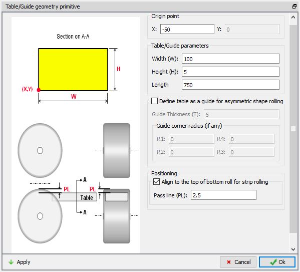
Geometry settings for Table(Back)
Define the Uniform Thickness number of layers as 5 and keep the rest of the settings as default as shown in Fig. L3.22. Click
on  to generate mesh for Table.
to generate mesh for Table.
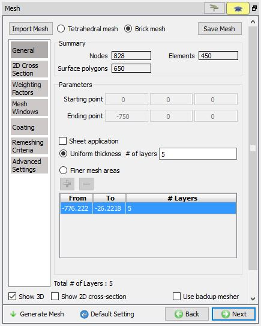
Mesh settings for Table(Back)
To assign material for Table(Back) select the material ‘AISI-H-13’ from material window. This can be done as shown in Fig. L3.23. Click on  until Table(Front) page.
until Table(Front) page.
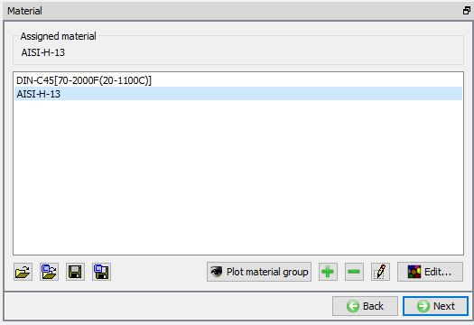
Assigning material to Table(Back)
Similar to Table(Back), define the Table(Front) with same settings for the geometry, mesh and material.
The Pusher object is created automatically using the workpiece dimensions and a constant velocity is assigned based on the roll speed. Click on  to check the created geometry and assigned
movement controls.
to check the created geometry and assigned
movement controls.
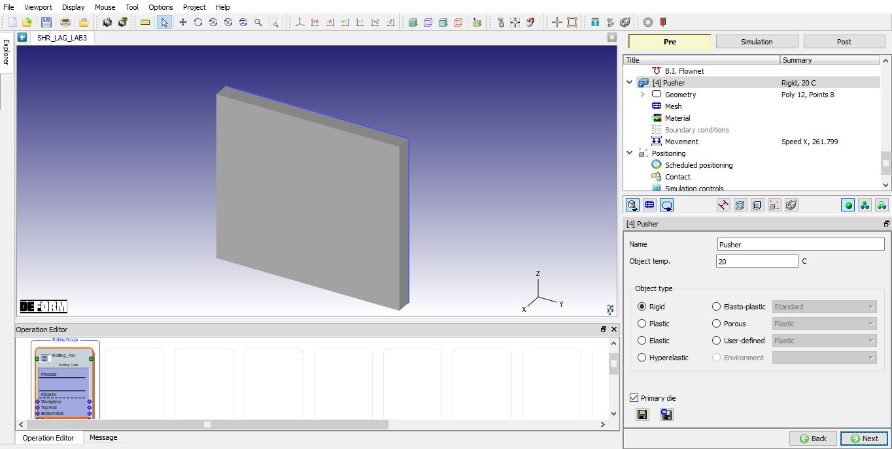
Pusher page
Check the default geometry using  option as shown in the Fig. L3.25. Click on
option as shown in the Fig. L3.25. Click on  to Pusher movement page.
to Pusher movement page.
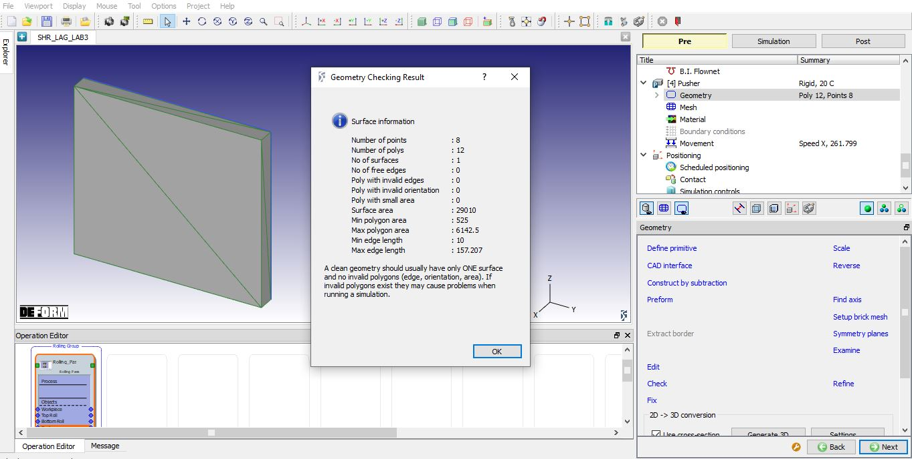
Defining Pusher Geometry
Select Speed option. Speed of the pusher should be 50 to 60% of the relative velocity of the rolls and hence assign a constant speed of 340 mm/sec for pusher. (See Fig. L3.26.)
The preview of the movement can be seen by clicking on the "Preview Movement" option. Click  will take you to Object Positioning page.
will take you to Object Positioning page.
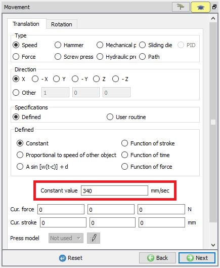
Defining Pusher Movement
The objects are automatically position correctly when we click
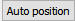
button in the 3D setup page and the Table(Front) and Table(Back) are created at proper position automatically, so no need to position.The objects positioned should appear as shown in Fig. L3.27.
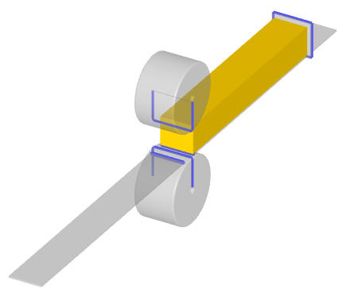
Position of the objects
In the Contact relations page, master-slave relations will be automatically added. Define the shear friction as 0.7 and interface heat transfer coefficient as 11 (see Fig. L3.28.). Click
the  to determine an intelligent contact tolerance and click on
to determine an intelligent contact tolerance and click on  button to generate contacts between objects
(switch to surface patch model to view the contacts generated between the objects). Click
button to generate contacts between objects
(switch to surface patch model to view the contacts generated between the objects). Click  button.
button.
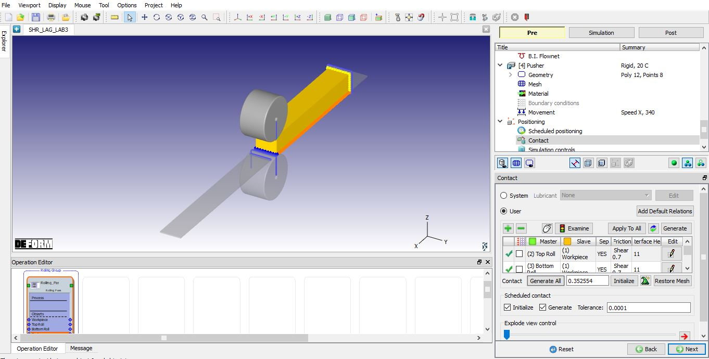
Contact Relations settings
In simulation controls page set Time steps as 5000 for this simulation with a step increment to save as 10 and Time per step as 0.001 sec. For stopping criteria select stopping plane and X direction (see Fig. L3.29.). Click on the free end edge of the workpiece for stopping plane stopping controls (i.e. in +X direction) (see Fig. L3.30.)
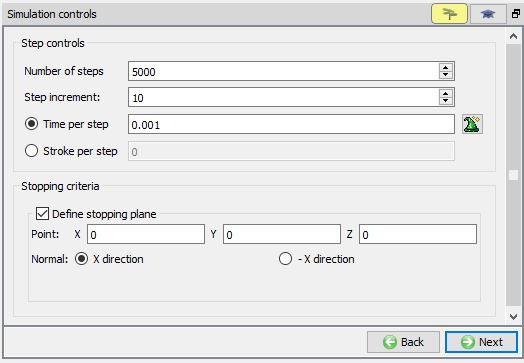
Defining Number of Steps and Stopping criteria
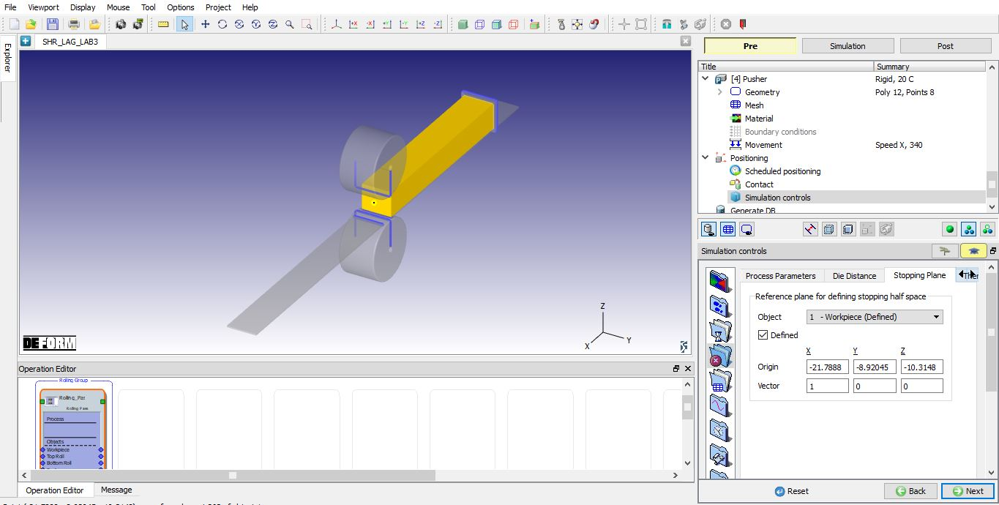
Stopping plane data (Expert mode)
In the database generation stage user can check the data required for the analysis and proceed to generate the database (see Fig. L3.31.). For First operation of any multiple operations, user is required to generate the database.
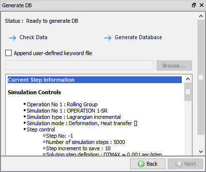
Database Generation
Once the database has been generated switch to the Simulation mode by clicking on  button above the operation tree. Click on the
button above the operation tree. Click on the  action label to open the Run Options dialog as shown in Fig. L3.32. Use the default Continue Run option to select
“Continue from the last step” option and then select the Simulation mode as Interactive radio button. Click on
action label to open the Run Options dialog as shown in Fig. L3.32. Use the default Continue Run option to select
“Continue from the last step” option and then select the Simulation mode as Interactive radio button. Click on  button to run
the simulation.
button to run
the simulation.
To define MPI settings, click on  button, Run Options window will expand and displays options to define MPI settings for simulation (max number of processors that can be defined depend
on your 3D MPI license).
button, Run Options window will expand and displays options to define MPI settings for simulation (max number of processors that can be defined depend
on your 3D MPI license).
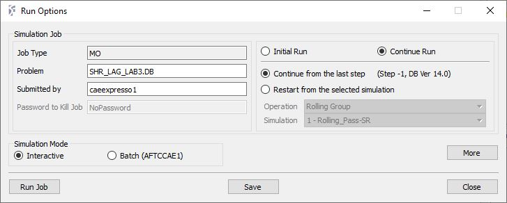
Run Simulation Popup
In post processor Step list below the graphic area displays step numbers available from the different operations simulated. A set of state variables available from the ‘Post’ menu can be used to review the model response.
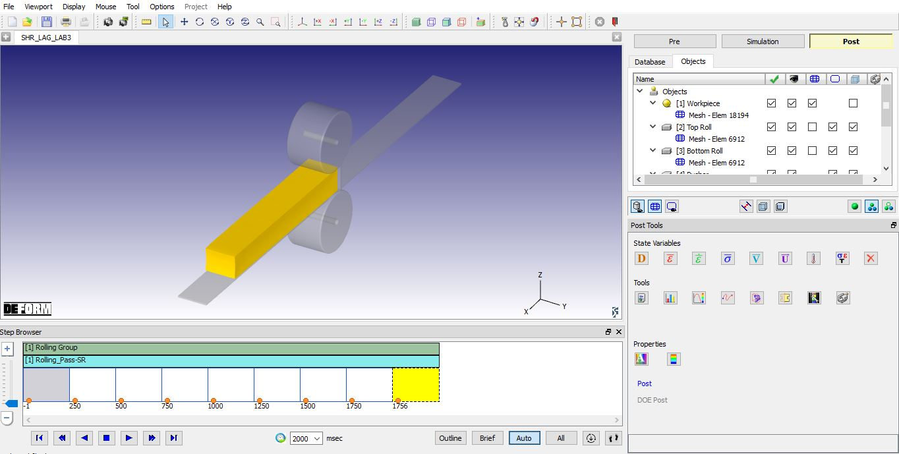
Post Processing wizard
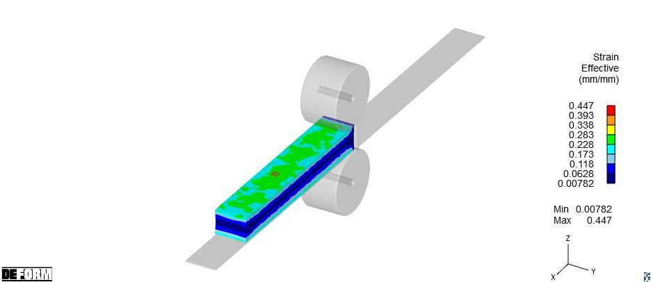
Strain Effective plot
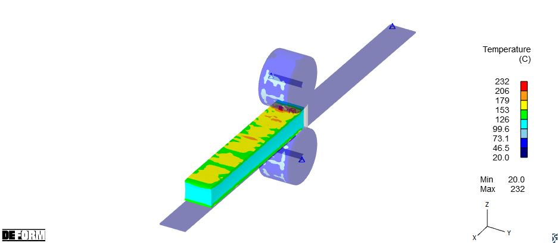
Temperature plot